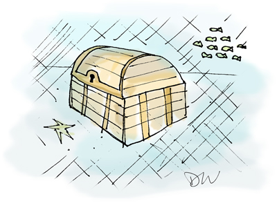

GEM
Jan 2015
rego {./lib/path/to/file.rb,./another/path/to/file.rb} -- bundle exec ruby -Itest test/this_test.rb -n /yyy/
Rego Example with a specific file highlighted using ruby's regex flad (-n)
site githubMore than a tweet. Less than a Post. Sometimes a doodle.
My favorites.
click.
 /sd_2.jpg
/sd_2.jpgThoughts, Feeling, Actions in words.
There are no rules to blogging. The point of a blog is you say whatever you want.
I used to think of blogging as a formal process. I suppose I got sucked into this whole professional formula that needed to have all these various things lined up;...
The whole 'your kids will only touch a hot stove once.' are the kind of lessons I look for with personal coding projects. I want to burn my hand on something relatively harmless. I've rebuilt this site at least 3 times because of I didn't incorporate...
Just because a static site is basic doesn't mean you have to copy and paste all over the place. Middleman takes advantage of partials just like Rails does. Another awesome feature of Middleman is dynamic pages. The way these work is you make a template...
Things I learn from the real programmers.
Jan 2015
Rego Example with a specific file highlighted using ruby's regex flad (-n)
site githubJan 2015
head -10 data.csvcheck the first 10 lines of an import
Jan 2015
grep foo development.loglook for the instances where foo was in the logs.
Save for later.
Jan 2015
Jan 2015
Jan 2015
A look at why Minitest remains a powerful and popular choice for testing Ruby code.
site engineyardI love reading and have been an avid reader for 17 years. The only downside to coding is that it slowed down my ability to read as wide and recreational as I used to. I plan to continue to curate this list by adding a few sentences of what I liked about these books. Stay tuned!
Dec 2014
Dec 2014
Andrew Hunter gave it to me. It's made for some good bathroom reading (Too much information??)
site amazonDec 2014
A lean but compact book. I'm on my 4th pass and picking up something new each time.
site amazonlooking.
Jan 2015
Jan 2015
Super?Jan 2015
For example, what does the X- do?
And, how is the header content consumed?